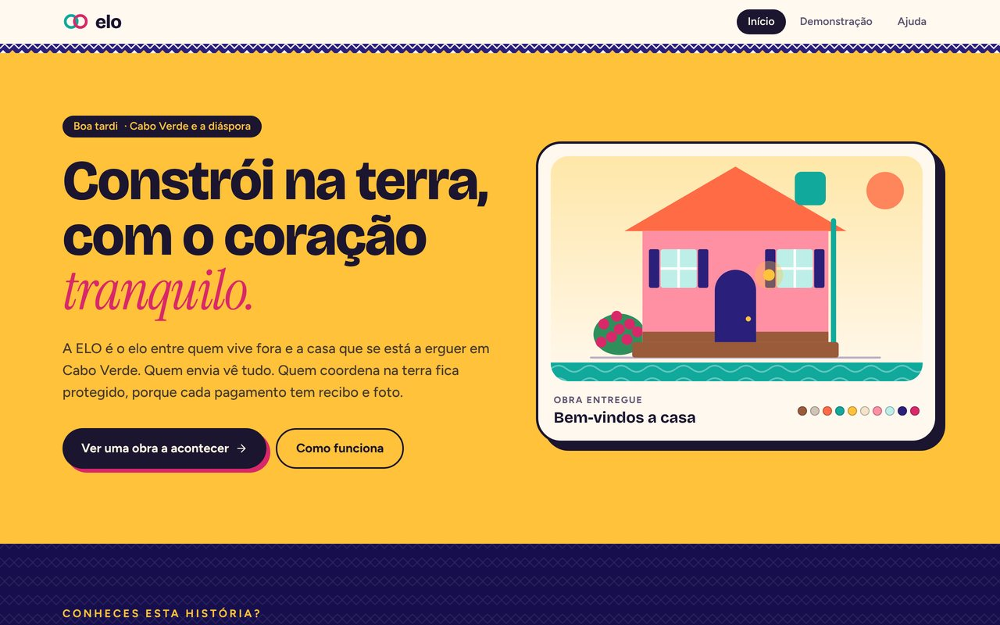
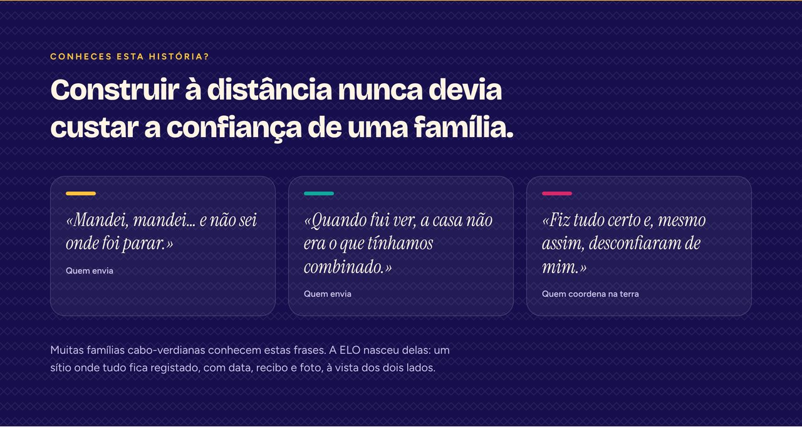
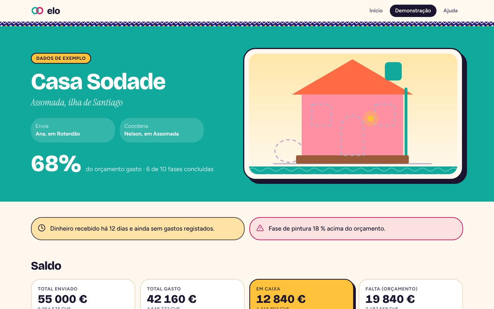
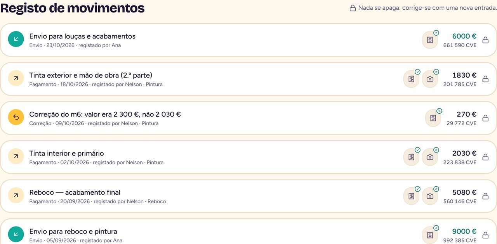
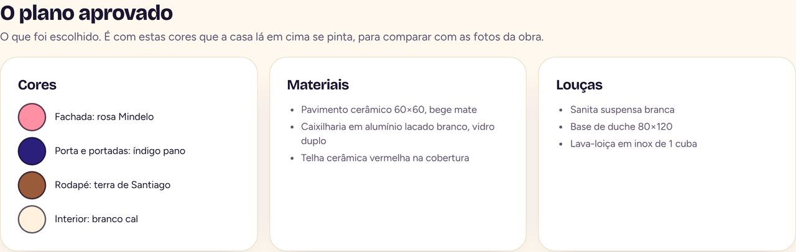
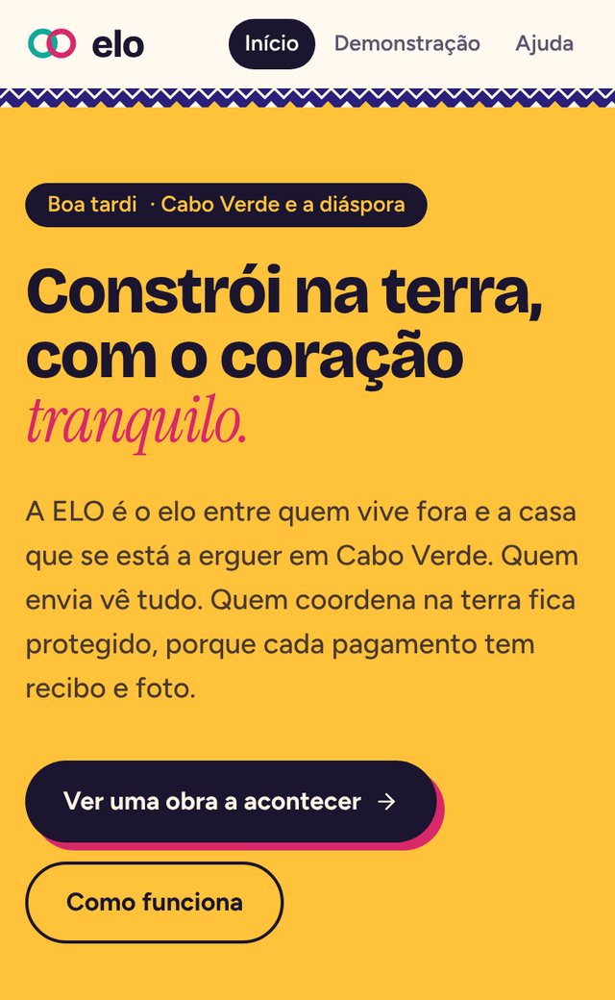

Porque nasceu
Construir à distância não devia custar a confiança de uma família
Em Cabo Verde e na diáspora, quase toda a gente conhece uma história assim: alguém emigrado envia dinheiro para construir casa na terra, um familiar coordena a obra, e a distância vai deixando dúvidas.
Dinheiro enviado sem se saber onde foi parar. Casas que, na hora de as conhecer, não têm as cores nem as louças combinadas. E quem coordenou na terra, mesmo com todos os recibos guardados, acusado injustamente.
Há quem deixe a obra a meio com medo de que corra mal. Eu própria quero um dia começar projetos em Cabo Verde e sinto esse receio. A ELO nasceu para que quem está longe e quem está na terra vejam exatamente o mesmo, desde o primeiro dia.
O que faz
Dois lados, a mesma verdade
Quem envia e quem coordena entram na mesma obra e veem a mesma informação.
Para quem envia
Saldo claro
Quanto foi enviado, quanto foi gasto, quanto está em caixa e quanto falta, em euros e em escudos.
O plano aprovado
As cores, os materiais e as louças escolhidos ficam guardados, para comparar com as fotos da obra.
Alertas
Avisos quando o dinheiro chega e fica parado, ou quando uma fase passa do orçamento.
«Fase de pintura 18 % acima do orçamento.»
Para quem coordena na terra
Cada pagamento com prova
Recibo e foto em cada gasto. Ninguém precisa de se justificar: está tudo lá, com data.
Nada se apaga
Um erro corrige-se com uma nova entrada, ligada à original. Ninguém pode ser acusado de esconder nada.
Tudo por fase
Fundações, paredes, cobertura, até à entrega. Sem papéis perdidos.
A assinatura
A casa que ganha cor
Cada fase concluída pinta uma parte da casa: as fundações, as paredes, o telhado, o depósito de água, a luz, o reboco, a pintura com a cor escolhida, as janelas, a porta e, no fim, a buganvília. O que falta aparece em traço de planta.
Uma cara de Cabo Verde
O pano di terra, as casas coloridas, o sol e a buganvília. «Bon dia», «Boa tardi» e «Boa noti» conforme a hora.
Ecrãs
Como se vê






A obra «Casa Sodade», a Ana e o Nelson são dados de exemplo.
Por dentro
Do envio à casa entregue
O que acontece numa obra acompanhada pela ELO.
- Diáspora · quem envia
Registar o envio
O envio é feito pelo banco de sempre. Na ELO fica registado com data e comprovativo.
- Cabo Verde · quem coordena
Registar cada gasto
Cada pagamento fica com o recibo, uma foto da obra e a fase a que pertence.
- Os dois lados
Ver o mesmo
O saldo, as fases e as fotos atualizam-se para os dois. A casa ganha cor a cada fase concluída.
- ELO · alertas
Avisar a tempo
Dinheiro parado há muitos dias ou uma fase acima do orçamento geram um aviso.
- Entrega
Comparar com o plano
No fim, as fotos comparam-se com o plano aprovado: cores, materiais e louças.
Como foi feita
As ferramentas, explicadas sem jargão
Cada linha diz o que a ferramenta é e para que serve nesta app.
Construir e publicar
Criou a primeira versão e é onde a app está publicada, em elo-cabo-verde.lovable.app.
Guarda o código e o histórico de cada alteração, com a explicação do porquê.
Refez a identidade visual e desenhou a casa que ganha cor, a partir dos meus pedidos.
A app por dentro
Os ecrãs, as cores e as animações, que respeitam quem prefere menos movimento.
A casa é desenhada em código: cada parte acende quando a fase fica concluída.
Decisões
O que decidi e porquê
Escolhas feitas para a ELO ser útil, segura e reconhecível.
Uma app de remessas teria de mexer em dinheiro, e isso exige licenças bancárias.
A ELO não toca no dinheiro: regista, organiza e mostra. Continua-se a enviar pelo banco de sempre.
A primeira versão ficou igual às minhas outras apps, em azul-escuro e dourado, e o anel de estrelas lembrava a bandeira europeia.
Refiz a identidade a partir de Cabo Verde: o pano di terra, as casas coloridas, o sol e a buganvília.
Uma barra de percentagem diz pouco a quem está longe.
Criei a casa que ganha cor: num relance vê-se o que está feito e o que falta.
Um registo que se pode apagar não protege ninguém.
Nada se apaga. Um erro corrige-se com uma nova entrada, ligada à original.
Em números
A ELO em números
Com franqueza
Limites atuais
- Ainda é uma demonstração com dados de exemplo: não há contas nem base de dados.
- As fotos e os recibos ainda são simulados.
- Os alertas ainda não são enviados por notificação.
A seguir
Próximos passos
- Contas para quem envia e para quem coordena, ligadas à mesma obra.
- Carregar fotos e recibos pelo telemóvel, mesmo com rede fraca.
- Testar com famílias reais antes de abrir ao público.
O meu papel
Lenira Leitão
A ideia, o problema e as decisões são meus. Cresci a ouvir estas histórias e sei o que a distância faz às obras e à confiança. A app foi construída com ferramentas de IA, a partir dos meus pedidos e das minhas escolhas.
Decidi que a ELO não mexe no dinheiro, para ser segura e possível, e que tem uma cara de Cabo Verde, para que quem a abre se sinta em casa.